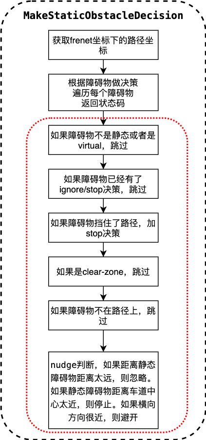

路径决策¶
概览¶
路径决策是规划模块的任务，属于task中的decider类别。
规划模块的运动总体流程图如下：

总体流程图以lane follow场景为例子进行说明。task的主要功能位于Process函数中。
Fig.1的具体运行过程可以参考path_bounds_decider。
路径决策相关代码及对应版本¶
在上一个任务中获得了最优的路径，路径决策的功能是根据静态障碍物做出自车的决策。
路径决策的代码是Apollo r6.0.0 path_decider
输入
Status PathDecider::Process(const ReferenceLineInfo *reference_line_info, const PathData &path_data, PathDecision *const path_decision)
输出
路径决策的信息都保存到了path_decision中。
路径决策代码流程及框架¶
路径决策的整体流程如下图：

在Process函数主要功能是调用了MakeObjectDecision函数。而在MakeObjectDecision函数中调用了MakeStaticObstacleDecision函数。
路径决策的主要功能都在MakeStaticObstacleDecision中。
Status PathDecider::Process(const ReferenceLineInfo *reference_line_info,
const PathData &path_data,
PathDecision *const path_decision) {
// skip path_decider if reused path
if (FLAGS_enable_skip_path_tasks && reference_line_info->path_reusable()) {
return Status::OK();
}
std::string blocking_obstacle_id;
if (reference_line_info->GetBlockingObstacle() != nullptr) {
blocking_obstacle_id = reference_line_info->GetBlockingObstacle()->Id();
}
// 调用MakeObjectDecision函数
if (!MakeObjectDecision(path_data, blocking_obstacle_id, path_decision)) {
const std::string msg = "Failed to make decision based on tunnel";
AERROR << msg;
return Status(ErrorCode::PLANNING_ERROR, msg);
}
return Status::OK();
}
bool PathDecider::MakeObjectDecision(const PathData &path_data,
const std::string &blocking_obstacle_id,
PathDecision *const path_decision) {
// path decider的主要功能在MakeStaticObstacleDecision中
if (!MakeStaticObstacleDecision(path_data, blocking_obstacle_id,
path_decision)) {
AERROR << "Failed to make decisions for static obstacles";
return false;
}
return true;
}
路径决策相关算法解析¶
针对上述的path-decider的流程图，进行代码分析。
获取frenet坐标系下的坐标
... ...
// 1.获取frenet坐标下的path路径
const auto &frenet_path = path_data.frenet_frame_path();
if (frenet_path.empty()) {
AERROR << "Path is empty.";
return false;
}
... ...
根据障碍物做决策
... ...
// 2.遍历每个障碍物，做决策
for (const auto *obstacle : path_decision->obstacles().Items()) {
const std::string &obstacle_id = obstacle->Id();
const std::string obstacle_type_name =
PerceptionObstacle_Type_Name(obstacle->Perception().type());
ADEBUG << "obstacle_id[<< " << obstacle_id << "] type["
<< obstacle_type_name << "]";
... ...
上图的红框中是循环体的主要内容，主要功能是遍历每个障碍物做决策。
如果障碍物不是静态或virtual，则跳过
// 2.1 如果障碍物不是静态的或者是virtual的，就跳过
if (!obstacle->IsStatic() || obstacle->IsVirtual()) { // （stop fence，各种fence）
continue;
}
如果障碍物有了ignore/stop决策，则跳过
// 2.2 如果障碍物已经有 ignore/stop 决策，就跳过
if (obstacle->HasLongitudinalDecision() &&
obstacle->LongitudinalDecision().has_ignore() &&
obstacle->HasLateralDecision() &&
obstacle->LateralDecision().has_ignore()) {
continue;
}
if (obstacle->HasLongitudinalDecision() &&
obstacle->LongitudinalDecision().has_stop()) {
// STOP decision
continue;
}
如果障碍物挡住了路径，加stop决策
// 2.3 如果障碍物挡住了路径，加stop决策
if (obstacle->Id() == blocking_obstacle_id &&
!injector_->planning_context()
->planning_status()
.path_decider()
.is_in_path_lane_borrow_scenario()) {
// Add stop decision
ADEBUG << "Blocking obstacle = " << blocking_obstacle_id;
ObjectDecisionType object_decision;
*object_decision.mutable_stop() = GenerateObjectStopDecision(*obstacle);
path_decision->AddLongitudinalDecision("PathDecider/blocking_obstacle",
obstacle->Id(), object_decision);
continue;
}
如果是clear-zone，跳过
// 2.4 如果是clear-zone，跳过
if (obstacle->reference_line_st_boundary().boundary_type() ==
STBoundary::BoundaryType::KEEP_CLEAR) {
continue;
}
如果障碍物不在路径上，跳过
// 2.5 如果障碍物不在路径上，跳过
ObjectDecisionType object_decision;
object_decision.mutable_ignore();
const auto &sl_boundary = obstacle->PerceptionSLBoundary();
if (sl_boundary.end_s() < frenet_path.front().s() ||
sl_boundary.start_s() > frenet_path.back().s()) {
path_decision->AddLongitudinalDecision("PathDecider/not-in-s",
obstacle->Id(), object_decision);
path_decision->AddLateralDecision("PathDecider/not-in-s", obstacle->Id(),
object_decision);
continue;
}
nudge判断
// 2.6 nudge判断，如果距离静态障碍物距离太远，则忽略。
// 如果静态障碍物距离车道中心太近，则停止。
// 如果横向方向很近，则避开。
if (curr_l - lateral_radius > sl_boundary.end_l() ||
curr_l + lateral_radius < sl_boundary.start_l()) {
// 1. IGNORE if laterally too far away.
path_decision->AddLateralDecision("PathDecider/not-in-l", obstacle->Id(),
object_decision);
} else if (sl_boundary.end_l() >= curr_l - min_nudge_l &&
sl_boundary.start_l() <= curr_l + min_nudge_l) {
// 2. STOP if laterally too overlapping.
*object_decision.mutable_stop() = GenerateObjectStopDecision(*obstacle);
if (path_decision->MergeWithMainStop(
object_decision.stop(), obstacle->Id(),
reference_line_info_->reference_line(),
reference_line_info_->AdcSlBoundary())) {
path_decision->AddLongitudinalDecision("PathDecider/nearest-stop",
obstacle->Id(), object_decision);
} else {
ObjectDecisionType object_decision;
object_decision.mutable_ignore();
path_decision->AddLongitudinalDecision("PathDecider/not-nearest-stop",
obstacle->Id(), object_decision);
}
} else {
// 3. NUDGE if laterally very close.
if (sl_boundary.end_l() < curr_l - min_nudge_l) { // &&
// sl_boundary.end_l() > curr_l - min_nudge_l - 0.3) {
// LEFT_NUDGE
ObjectNudge *object_nudge_ptr = object_decision.mutable_nudge();
object_nudge_ptr->set_type(ObjectNudge::LEFT_NUDGE);
object_nudge_ptr->set_distance_l(
config_.path_decider_config().static_obstacle_buffer());
path_decision->AddLateralDecision("PathDecider/left-nudge",
obstacle->Id(), object_decision);
} else if (sl_boundary.start_l() > curr_l + min_nudge_l) { // &&
// sl_boundary.start_l() < curr_l + min_nudge_l + 0.3) {
// RIGHT_NUDGE
ObjectNudge *object_nudge_ptr = object_decision.mutable_nudge();
object_nudge_ptr->set_type(ObjectNudge::RIGHT_NUDGE);
object_nudge_ptr->set_distance_l(
-config_.path_decider_config().static_obstacle_buffer());
path_decision->AddLateralDecision("PathDecider/right-nudge",
obstacle->Id(), object_decision);
}
}